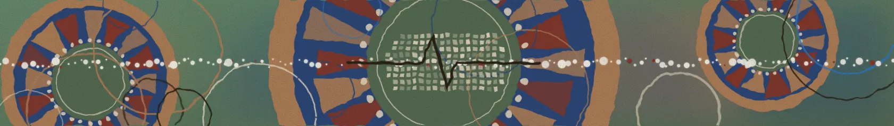

Análises

Dados de mundo real do SUS: o que cobrem, como se ligam, o que respondem e o que não respondem
O Brasil tem um dos maiores sistemas públicos e universais de saúde do mundo, o SUS, e publica o rastro administrativo de quase tudo o que ele faz: cada internação em hospital público, cada procedimento ambulatorial que paga, cada declaração de óbito, cada nascido vivo, cada caso de doença de notificação compulsória. Quase tudo vem registro a registro, com cobertura nacional e de graça. Para quem trabalha com dados de mundo real (real-world data, RWD) na indústria farmacêutica, é um recurso raro: uma população de 213 milhões, com três décadas de história e sem custo de licença.
Também é raro no que falta. Nenhum arquivo público traz identificador do paciente, então nada se liga no nível da pessoa. Cobertura, codificação e completude mudam de fonte para fonte e de ano para ano. Este texto mapeia o que existe, mede como as peças se encaixam e diz com clareza o que os dados sustentam e o que não sustentam. Tudo aqui foi medido numa cópia local dos arquivos oficiais em outubro de 2026.

O inventário
Vinte e quatro tabelas, 13 bilhões de linhas. Agrupadas pelo nome que receberiam numa equipe de RWD da indústria:
| Fonte | Anos | Registros | Unidade de registro | Equivalente na indústria |
|---|---|---|---|---|
| SIH, internações | 2009–2025 | 200 mi | uma internação paga pelo SUS: CID-10, datas, procedimentos, diárias de UTI, valor pago, óbito no hospital | claims hospitalares de um pagador público único |
| SIH, serviços profissionais | 2008–2025 | 2,4 bi | um ato profissional faturado dentro de uma internação | itens de claims |
| SIA, produção ambulatorial | 2008–2025 | 6,2 bi | uma linha de procedimento ambulatorial; os registros individuais (APAC) trazem CID-10 e cobrem oncologia, diálise e medicamentos de alto custo | claims ambulatoriais e de farmácia especializada |
| SIA, atenção psicossocial | 2012–2025 | 138 mi | um mês de cuidado em saúde mental na comunidade (CAPS) | registros de episódio ambulatorial |
| SIM, óbitos | 1996–2022 | 31 mi | uma declaração de óbito: causa básica e associadas (CID-10), local, idade, sexo, raça/cor | índice nacional de óbitos |
| SINASC, nascidos vivos | 1994–2023 | 86 mi | uma declaração de nascido vivo: idade gestacional, peso ao nascer, idade e escolaridade da mãe, anomalias congênitas | registro de nascimentos |
| SINAN, agravos de notificação | 2000–2026 | 46 mi | uma ficha de notificação: dengue, chikungunya, zika, febre amarela, malária, síndrome respiratória aguda grave, violência | registros de vigilância |
| SISVAN, estado nutricional | 2008–2023 | 406 mi | uma aferição antropométrica na atenção básica | extrato de prontuário (só sinais vitais) |
| SI-PNI, vacinação | 1994–2019; microdados de 2020 | 94 mi + 102 mi | doses por vacina e município; uma dose por registro nos microdados de 2020 | registro de imunização |
| CNES, estabelecimentos | 2005–2025 | 950 mi | estabelecimento, leito e profissional, mês a mês | cadastro de prestadores |
| ANS, planos de saúde | 2014–2025 | 2,3 bi | contagem de beneficiários por tipo de plano, município e mês | arquivo de adesão, agregado |
| SNGPC, medicamentos controlados | 2014–2021 | 10 mi | uma venda em farmácia de medicamento controlado, com UF do prescritor e CID-10 | dispensação em farmácia (cópia parcial) |
| População | 2000–2025 | 4,9 mi | residentes por município, sexo e idade | denominadores |
A linha do tempo já mostra algumas coisas. Os registros vitais são os mais antigos, de meados dos anos 1990. O faturamento começa em 2008–09. Cada fonte termina num ano diferente: óbitos em 2022, nascimentos em 2023, faturamento hospitalar em meados de 2025, vigilância já em 2026. Um estudo que precise de todas termina em 2022. O volume está no faturamento: 6,2 bilhões de linhas ambulatoriais e 2,4 bilhões de atos profissionais.
A cópia do arquivo de vendas de controlados para em exatamente 10 milhões de linhas, com 2021 cortado. Serve para explorar, não para contar.

Como se ligam: lugar, estabelecimento, diagnóstico, tempo
Nenhum arquivo público traz identificador do paciente. O SUS tem um, o número do Cartão Nacional de Saúde, mas ele é retirado antes da publicação. Toda análise que cruza fontes, portanto, se apoia em quatro chaves comuns:
- Município (código IBGE), presente em todas as fontes. Casa com a lista oficial em 99,6–100% dos registros de 2022.
- Estabelecimento (código CNES), presente em todas as fontes, menos quando o cuidado acontece em casa. Casa com o cadastro de estabelecimentos em 98–100% dos registros, e em 72% das declarações de óbito (óbito em casa não tem estabelecimento).
- Diagnóstico (CID-10), nas internações, no ambulatório e nos óbitos. Código válido em 99,99% das internações e dos óbitos. As fichas de notificação são específicas de cada doença e não precisam de CID.
- Tempo: data de internação, de óbito ou de nascimento; semana epidemiológica na vigilância; mês de competência no faturamento.
Então a ligação é ecológica (município × período × diagnóstico) ou por estabelecimento (o que acontece num dado hospital), nunca por pessoa. Isso descarta coortes que sigam um paciente do diagnóstico ao óbito entre sistemas. Ainda permite a maioria dos desenhos descritivos e ecológicos, e estudos de qualidade e volume por estabelecimento.
A segunda lição é menos óbvia: o mesmo conceito é codificado de um jeito em cada sistema, e nada dá erro quando eles se misturam. Medido nos registros de 2022:
- Sexo é a palavra "Feminino" ou "Masculino" nas internações, os códigos 1 e 2 nos óbitos e nascimentos, e F ou M no ambulatório, na vigilância e no SISVAN. No arquivo de síndrome respiratória aguda grave está vazio em todo registro, de 2009 a 2022.
- Raça/cor "parda" é o código 3 no faturamento ambulatorial e o código 4 nos óbitos, nascimentos, vigilância e SISVAN, onde 3 quer dizer "amarela". Juntar os dois pelo código troca, sem aviso, o maior grupo do país por um dos menores.
- Diagnóstico nas internações fica num campo de 3 caracteres ou num de 4, nunca nos dois: 89% das internações só têm o código de 4 caracteres. Filtrar só pelo campo de 3 perde nove internações em dez. As autorizações ambulatoriais repetem a divisão: lendo só o campo de 3 caracteres, os registros de medicamentos especializados de 2024 parecem 96% sem diagnóstico, quando todos têm código.
- Município tem 7 dígitos nos óbitos e nascimentos e 6 (sem dígito verificador) no faturamento hospitalar e ambulatorial. No faturamento ambulatorial, o município do paciente fica num campo com nome de ID do paciente.
- Código do estabelecimento na declaração de óbito vem gravado como decimal ("2000733.0") e não casa com nada até ser limpo.
Nenhum desses casos dá erro. Cada um produz um resultado que parece plausível.

Adequação ao uso, medida
Nos termos da FDA e da EMA, a pergunta não é se os dados são bons, mas se são bons o bastante para uma dada pergunta. Cinco dimensões, medidas.
Completude. Lugar, data, idade e sexo estão quase completos em todas as fontes, com a exceção citada acima. Raça/cor é o campo fraco: 75% nos registros ambulatoriais, 80–85% nas internações, notificações de dengue e SISVAN, 96–98% nos óbitos e nascimentos. Só um terço dos registros ambulatoriais individuais traz CID-10. O grosso da produção ambulatorial é informado de forma consolidada, sem paciente nenhum.

Qualidade da causa de óbito. Em 1996, 15,1% dos óbitos tinham causa básica mal definida (CID-10 R00–R99). Em 2022 eram 6,1%, depois de uma queda forte em 2004–07, quando estados do Norte e do Nordeste montaram serviços de verificação de óbito. A queda foi desigual: o Rio de Janeiro passou de 9,6% para 9,4% e hoje é o terceiro pior. Uma comparação de mortalidade por causa entre UFs ou décadas que ignore isso mede, em parte, codificação.

Cobertura. Os registros vitais e de notificação (óbitos, nascimentos, agravos) cobrem todo mundo. O faturamento cobre só o cuidado pago pelo SUS. Em dezembro de 2024, 52,2 milhões de pessoas, 24,6% da população, tinham plano médico privado, de 4% em Roraima a 40% em São Paulo. As internações delas são invisíveis nos dados hospitalares. Qualquer taxa baseada em hospital fica, portanto, enviesada por UF, e na mesma direção da renda. A adesão a planos privados só é publicada como contagem: serve para corrigir denominadores, não para identificar pacientes.
Oportunidade e atraso. O faturamento é processado todo mês e chega em poucos meses. Uma internação é faturada no mês da alta ou depois, então o ano de faturamento não é o ano do cuidado. Os microdados de óbito saem como definitivos cerca de dois anos depois do ano do óbito, e o ano mais recente nesta cópia é 2022. As notificações chegam numa mediana de 3 dias depois do início dos sintomas, mas o caso é encerrado semanas depois: na dengue, a mediana entre notificação e encerramento caiu de 31 dias em 2014 para 14 em 2025.
Estabilidade no tempo. As classificações mudam debaixo dos pés de quem analisa. A dengue passou para as definições de caso da OMS de 2009 em 2014, com códigos novos. A partir de 2022 o arquivo público de dengue deixou de trazer as notificações descartadas, então "todas as notificações" quer dizer coisas diferentes antes e depois. Os campos de comorbidade da ficha de dengue ficaram em branco até 2015 e só são utilizáveis a partir de 2017. Um estado, o Espírito Santo, notificou dengue num sistema próprio em 2021–2024 e quase some do arquivo nacional, enquanto os hospitais de lá continuaram faturando internações por dengue.
Privacidade. Os registros hospitalares e de vigilância trazem data de nascimento, sexo, município e, nos hospitalares, CEP. Combinados, conseguem singularizar pessoas em municípios pequenos. Tudo o que se publica aqui é agregado, e células com menos de 10 eventos são suprimidas.
Exemplo 1: mortalidade infantil a partir de dois registros

A taxa de mortalidade infantil precisa de dois registros: óbitos de menores de um ano (SIM) divididos por nascidos vivos (SINASC). Eles não têm identificador em comum, mas têm o município de residência e o ano, e isso basta para a taxa. A razão direta caiu de 26,4 por mil em 1996 para 11,6 em 2022. Os óbitos neonatais, nos primeiros 28 dias, dependem mais do cuidado hospitalar. Caíram cerca de metade e hoje são dois terços do total. Sergipe (16,8) e Amapá (16,5) têm quase o dobro do Distrito Federal (8,7).
A conferência faz parte do exemplo. Em 2022 o arquivo de óbitos tem 30.791 registros com idade abaixo de um ano, 29.764 depois de tirar 1.006 idades negativas impossíveis e 21 registros sem município. Uma segunda contagem, pelas datas de nascimento e de óbito, dá 30.668. Onde o registro é mais fraco a razão direta subconta, e é por isso que as estimativas oficiais do Norte e do Nordeste são corrigidas para cima.
Exemplo 2: dengue, da notificação ao hospital e ao óbito

A dengue atravessa três sistemas: notificada no SINAN, internada no SIH, atestada no SIM. Entre 2014 e 2024 a vigilância registrou 16,7 milhões de casos prováveis e 12.788 óbitos. Os hospitais do SUS faturaram 567.723 internações, por R$ 231,7 milhões. 2024 saiu da escala: 6,4 milhões de casos prováveis, 3,8 vezes o recorde anterior, com 158.910 internações e 6.270 óbitos.
A série também mostra como o quadro hospitalar mudou. Em 2014 havia uma internação no SUS para cada 16 casos prováveis; em 2024, uma para cada 40. A letalidade hospitalar entre os internados subiu de 0,45% para 1,58%. Menos pacientes chegam a um leito público, e os que chegam estão mais graves. Isso combina com a hidratação ambulatorial dos casos mais leves. Também combina com mais internações indo para hospitais privados, que o SIH não vê. Só com os dados não dá para separar as duas coisas.

Três sistemas, três contagens de óbito. Em 2014–2022 a vigilância encerrou 5.422 casos como óbito, as declarações de óbito citaram dengue 5.925 vezes e os hospitais do SUS registraram 2.755 óbitos na internação. Cada um conta um evento diferente, e sem identificador do paciente eles não podem ser conciliados um a um. Um estudo que precise de "óbitos por dengue" tem que escolher uma definição e dizer qual.
Dentro do SINAN, que é registro a registro, os fatores de risco se leem diretamente. Em 2024 a letalidade subiu de 0,21 por mil entre crianças para 15,3 por mil acima dos 80 anos, e diabéticos de 60 a 79 anos morreram 2,9 vezes mais que não diabéticos da mesma idade. Com uma ressalva: a comorbidade é registrada com mais cuidado nos casos graves.

A ficha de notificação é também o único lugar em que um resultado molecular chega à base nacional: o sorotipo do vírus, por RT-PCR ou isolamento viral. Ele é preenchido em muito poucos casos, 0,2–0,8% dos casos prováveis por ano até 2021 e cerca de 3% desde 2023. Mesmo assim, basta para ver o vírus mudar. O DENV-3 ficou quase ausente por uma década, com menos de 110 casos tipados por ano até 2023. Depois subiu para 1.766 em 2024 e 6.857 em 2025, 14% dos casos tipados, e para 30% no arquivo parcial de 2026. Enquanto isso o DENV-2 passou o DENV-1, de 30% da composição em 2024 para 74% em 2025. Uma população que só conheceu DENV-1 e DENV-2 não tem imunidade ao DENV-3. Isso importa para prever uma epidemia, ou para escolher centros de estudo clínico de uma vacina ou de um antiviral. Mas é um sinal, não uma amostra: quais casos são tipados depende do laboratório do estado, não do paciente.
Exemplo 3: medicamentos de alto custo, por doença

O SUS dispensa medicamentos de alto custo a pacientes ambulatoriais por meio de autorizações mensais (APAC). Cada uma traz o procedimento, que no caso de medicamento é o próprio remédio, e o diagnóstico do paciente. Em 2025 foram 50,5 milhões de registros do Componente Especializado da Assistência Farmacêutica, o programa nacional para doenças crônicas e raras. Foram mais 5,4 milhões de quimioterapia. Cada registro é um procedimento, para um paciente, num mês; dividir por doze dá uma contagem aproximada de pacientes em tratamento num mês médio. Os dois arquivos trazem diagnóstico em todo registro, ao contrário do resto do faturamento ambulatorial. Isso faz deles o equivalente público mais próximo de um arquivo de claims de farmácia especializada.
Os diagnósticos se parecem com os protocolos clínicos. Dislipidemias, glaucoma, esquizofrenia, doença renal crônica, asma e DPOC lideram em volume. Diabetes tipo 2, artrite reumatoide, transplantes e epilepsia vêm em seguida. No câncer, os tumores de mama são 48% de todas as autorizações, a maioria tratamento adjuvante autorizado mês após mês depois da cirurgia. O câncer de próstata vem depois, e então a leucemia mieloide.
Os valores são a armadilha. Em 7 dos 15 principais diagnósticos de medicamentos, a conta do ano inteiro é R$ 0. O Ministério compra esses medicamentos de forma centralizada e os envia aos estados, então a autorização registra a dispensação, mas não o custo. Em 2025 as autorizações faturaram R$ 2,03 bilhões. A ação orçamentária federal que compra esses medicamentos pagou R$ 12,85 bilhões no mesmo ano. Entre 2014 e 2020 o número de registros subiu pela metade enquanto o valor faturado caiu pela metade. As autorizações medem quantos pacientes recebem qual tratamento, e onde. Não medem gasto.

Ao longo do tempo, elas mostram a incorporação. Entre 2014 e 2025 os registros de psoríase cresceram 6,9 vezes, os de lúpus 5,4 vezes e os de espondilite anquilosante 4,0 vezes, com a entrada de medicamentos novos, muitos deles biológicos, nos protocolos do SUS. A artrite reumatoide cresceu 2,5 vezes. A doença inflamatória intestinal dobrou e a esclerose múltipla cresceu 1,9 vez. O Alzheimer quase não se mexeu. Entre estados, a mesma doença é tratada em ritmos muito diferentes. O Paraná dispensa medicamentos para artrite reumatoide a 309 pacientes por 100 mil habitantes num mês médio, a média nacional é 125 e Tocantins fica em 30. A prevalência de artrite reumatoide não varia 10 vezes entre os estados brasileiros, então a maior parte dessa diferença é acesso ao diagnóstico e ao programa. Para um plano de lançamento ou um dossiê de acesso, essa diferença é o achado. Valem os limites de sempre. Sem identificador do paciente, quem usa dois medicamentos conta duas vezes, a troca de medicamento é invisível e a persistência não pode ser medida.
A diferença também mostra por que a linhagem do dado importa. Uma primeira versão desta seção usou uma cópia secundária do arquivo ambulatorial. Nela, os registros de medicamentos especializados de Alagoas caíram de 582 mil em 2023 para 221 mil em 2024, e o estado aparecia com 13 pacientes por 100 mil, uma diferença de 22 vezes para o Paraná. Refeito a partir dos arquivos originais do Ministério, Alagoas tem 632 mil registros em 2025 e 42 pacientes por 100 mil. A queda era dado faltando, não paciente faltando, e nada na cópia avisava.
O que dá e o que não dá para responder
Serve bem:
- Carga, tendência e geografia das doenças que internam, dos óbitos, dos nascimentos e dos agravos de notificação, no país e até o nível do município.
- Uso e custo de serviços no sistema público: internações, tempo de permanência, uso de UTI, procedimentos e medicamentos ambulatoriais de alto custo (APAC), valores pagos.
- Incorporação de tratamento por doença e UF para medicamentos de alto custo e quimioterapia dispensados pelo SUS.
- Estudos ecológicos que juntam desfechos de saúde a dados sociais e ambientais por município, que o Brasil publica para todos os municípios.
- Análises por estabelecimento de volume, capacidade (leitos, equipamentos, equipe) e desfechos.
- Fatores de risco registro a registro dentro de um sistema: idade, sexo, comorbidades e gravidade na vigilância; peso ao nascer e idade gestacional nos nascimentos.
Serve mal, ou só com cuidado:
- Tudo o que segue um paciente entre sistemas ou ao longo do tempo: sequência de tratamento, persistência, tempo do diagnóstico ao óbito. Isso exige acesso restrito a dados identificados.
- Tudo o que acontece no setor privado, um quarto da população, distribuído de forma desigual.
- Diagnóstico ambulatorial, que quase não existe fora dos procedimentos de alta complexidade e dos medicamentos de alto custo.
- Prescrição e dispensação no varejo: o que é público cobre os medicamentos controlados e os de alto custo do SUS por diagnóstico. O custo dos medicamentos comprados de forma centralizada não está no registro.
- Qualquer coisa molecular. O Brasil não publica dados genômicos, transcriptômicos ou de biomarcadores junto desses sistemas. O único resultado de laboratório nas bases nacionais é o sorotipo da dengue, registrado em cerca de 3% dos casos.
- Comparações entre períodos longos sem conferir mudanças de codificação e de classificação.
Método
- Fontes. Ministério da Saúde / DATASUS: SIH (AIH reduzida e serviços profissionais), SIA (produção ambulatorial e atenção psicossocial), SIM, SINASC, SINAN (dengue, chikungunya, zika, febre amarela, malária fora da Amazônia, síndrome respiratória aguda grave, violência), SISVAN, SI-PNI, CNES. Agência Nacional de Saúde Suplementar (ANS). Anvisa (SNGPC). IBGE (população, cadastro de municípios). Tabela oficial da CID-10. O SI-PNI foi lido de um espelho público de terceiros dos arquivos oficiais.
- Contagens são registros como publicados, pelo ano gravado em cada arquivo. Linhas não são pessoas.
- Completude usa os registros de 2022; os registros ambulatoriais individuais (BPA-I, APAC, RAAS) e os do SISVAN usam junho de 2022. Um campo conta como utilizável quando não está em branco nem codificado como ignorado.
- Ligação: as taxas de casamento comparam cada chave com a lista oficial de referência: municípios do IBGE (7 ou 6 dígitos), o cadastro CNES do mesmo ano e códigos CID-10 válidos de 3 e 4 caracteres.
- Causas mal definidas usam a causa básica do óbito; a UF vem do código do município de residência, mantendo os óbitos com UF conhecida e município ignorado. O total nacional de 1996 (908.883 óbitos) bate com o número oficial.
- Cobertura privada conta beneficiários ativos de planos médico-hospitalares em dezembro, usando só a carga mais recente de cada mês. O total de dezembro de 2022 (50,0 milhões) fica a menos de 2% do número publicado pela ANS.
- Dengue: casos prováveis são notificações não classificadas como descartadas; as internações têm diagnóstico principal A90–A91; os óbitos por declaração têm causa básica A90–A91.
- Medicamentos de alto custo são autorizações ambulatoriais (APAC, principais e secundárias) do grupo SIGTAP 06.04, o Componente Especializado da Assistência Farmacêutica, e quimioterapia do grupo 03.04. São contadas por ano de processamento. 2025 e 2026 vêm dos arquivos mensais originais do Ministério; os anos anteriores, de uma cópia secundária, que para esses dois grupos difere do original em menos de 2% onde os dois existem (janeiro a junho de 2025). 2026 é parcial e fica de fora. O diagnóstico é a categoria CID-10 de 3 caracteres, tirada de qualquer um dos dois campos de diagnóstico que esteja preenchido. As taxas por UF usam a UF do estabelecimento que dispensa e as estimativas de população do IBGE para 2025. A referência federal é a ação orçamentária 4705 (medicamentos do Componente Especializado), valor pago, dos dados de execução da despesa federal.
- Sorotipo conta os casos prováveis de dengue cuja ficha registra DENV-1 a DENV-4. 2026 é parcial.
Dados rodados em 5 de outubro de 2026; o parágrafo dos sorotipos e o exemplo 3 em 18 de novembro de 2026.